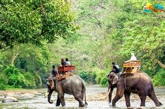
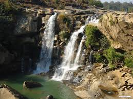

.jpeg)
Tree Houses in Bihar: A Unique Stay Amidst Nature 🌳🏕️
Bihar offers a few exciting tree house experiences for nature lovers and adventure seekers. These eco-friendly accommodations allow visitors to enjoy the beauty of forests while staying amidst lush greenery.
Locations of Tree Houses in Bihar
1. Valmiki Tiger Reserve, West Champaran 🐅🌿
- Bihar’s only tiger reserve, known for its rich biodiversity.
- Tree houses offer stunning views of the jungle and wildlife.
2. Rajgir Hills, Nalanda⛰️🌲
- Surrounded by dense forests and historical sites.
- Some eco-resorts offer treehouse-style accommodations.
3. Kaimur Wildlife Sanctuary, Kaimur District🦌🌳
- Home to various wildlife species and scenic landscapes.
- Ideal for nature lovers looking for a peaceful stay.
These locations provide a unique and adventurous way to experience Bihar’s natural beauty. 🌿🏡✨
Jhula Pull in Bihar: A Unique Hanging Bridge Experience 🌉✨
Jhula Pull (Hanging Bridge) in Bihar is an exciting attraction for tourists, offering a blend of adventure, scenic beauty, and historical significance. These suspension bridges provide a thrilling walking experience and stunning views of rivers and landscapes.
Famous Jhula Pulls for Tourism in Bihar
1. Valmiki Nagar Jhula Pull, West Champaran 🌳🌊
- Located near Valmiki Tiger Reserve, this bridge offers mesmerizing views of the Gandak River.
- Surrounded by lush greenery, it is a perfect spot for nature lovers and photographers.
- Ideal for travelers visiting Valmiki National Park and enjoying jungle safaris.
2. Rajendra Setu, Mokama 🌊
- A historic rail-cum-road bridge over the Ganga River.
- Offers beautiful panoramic views of the river and surroundings.
- A great spot for travelers exploring Bihar’s engineering marvels.
3. Gandhi Jhula, Patna 🏗️
- A pedestrian bridge offering a scenic view of the Ganga River.
- Popular among locals and tourists for evening walks and photography.
4. Simaria Jhula Pull, Begusarai 🌉
- A picturesque hanging bridge connecting local areas.
- A peaceful place to enjoy river views and capture memorable moments.
🚶♂️✨
.jpeg)

Animal Rides in Bihar: A Thrilling Experience for Tourists 🐎🐘✨
Bihar offers exciting animal ride experiences that allow tourists to explore nature, history, and culture in a unique way. From peaceful elephant safaris to thrilling camel and horse rides, these adventures provide a memorable journey through Bihar’s scenic landscapes.
Best Places for Animal Rides in Bihar
1. Valmiki Tiger Reserve, West Champaran 🐘🌳
- Enjoy an adventurous **elephant safari** through dense forests.
- Experience close encounters with wildlife in their natural habitat.
- A must-visit for nature lovers and wildlife enthusiasts.
2. Rajgir Wildlife Safari, Nalanda 🐫⛰️
- Offers **camel and horse rides** amidst Rajgir’s scenic hills.
- A great way to explore Rajgir’s natural beauty and historical sites.
- Ideal for family trips and adventure seekers.
3. Bodh Gaya, Gaya 🐎🛕
- Tourists can enjoy **horse rides** near the Mahabodhi Temple and riverbanks.
- Provides a traditional experience while exploring Buddhist heritage sites.
- A peaceful and culturally rich ride for visitors.
4. Sonpur Cattle Fair, Sonpur 🐪🎡
- Known as Asia’s largest cattle fair, offering **elephant and camel rides**.
- A unique experience to witness Bihar’s cultural and trade traditions.
- Perfect for those looking to explore rural tourism and folk activities.
These animal rides in Bihar offer a mix of adventure, history, and cultural experiences, making them a must-try for tourists visiting the state! 🏕️🐾✨
Rajgir Wildlife: A Paradise for Nature & Adventure Lovers 🌿🐅✨
Rajgir Wildlife offers a breathtaking experience for tourists who love nature, wildlife, and adventure. Nestled amidst lush green hills, this region is home to diverse flora and fauna, making it a perfect destination for eco-tourism and outdoor activities.
Top Attractions in Rajgir Wildlife
1. Rajgir Wildlife Safari, Nalanda 🦌🌲
- Explore the beauty of Rajgir’s forests through an **exciting wildlife safari**.
- Spot animals like deer, leopards, and various bird species in their natural habitat.
- A must-visit destination for wildlife lovers and adventure seekers.
2. Vulture’s Peak (Griddhakuta), Rajgir 🦅⛰️
- A famous spot known for its **rich biodiversity and historical significance**.
- Home to endangered vulture species and offers panoramic views of the valley.
- A great place for trekking and photography.
3. Hot Springs & Nature Trails, Rajgir 🌊🌿
- Enjoy the **therapeutic hot springs** surrounded by natural beauty.
- Walk through **lush green trails** filled with wildlife sounds and fresh air.
- A peaceful retreat for relaxation and nature enthusiasts.
4. Rajgir Ropeway & Hills 🚠🏞️
🚶♂️✨
.jpeg)

Jharanas of Bihar: Hidden Waterfall Treasures 🌊🏞️✨
Bihar is home to several mesmerizing **jharanas (waterfalls)** that offer a perfect escape into nature. Surrounded by lush greenery and scenic landscapes, these waterfalls are ideal for trekking, photography, and peaceful retreats.
Famous Jharanas (Waterfalls) in Bihar
1. Kakolat Waterfall, Nawada 🌿🌊
- One of Bihar’s most famous waterfalls, offering a **breathtaking natural pool**.
- A perfect spot for **picnics, swimming, and nature photography**.
- Surrounded by hills, making it an ideal trekking destination.
2. Dhua Kund Waterfall, Sasaram ⛰️💦
- A stunning twin waterfall known for its **misty appearance**.
- Associated with the legend of **Ashoka the Great**, adding historical significance.
- Best visited during monsoons for a full-flowing scenic beauty.
3. Tutla Bhawani Waterfall, Rohtas 🌳🏕️